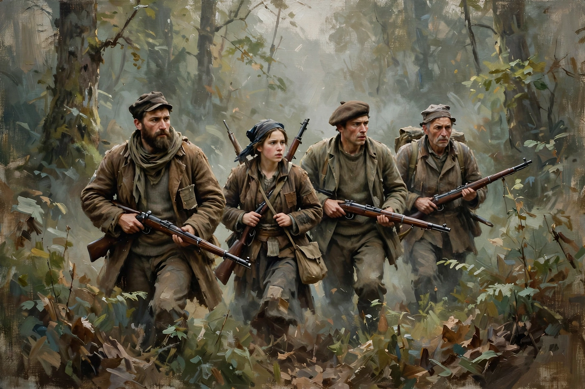

| Partisan | |
|---|---|
 | |
| Type | Irregular military force |
| Role | Resistance to occupation; guerrilla warfare behind enemy lines |
| Notable movements | Yugoslav Partisans, Soviet partisans, Italian resistance, French Resistance |
A partisan is a member of an irregular military force formed to oppose control of an area by a foreign power or an occupying army. Partisans typically conduct guerrilla warfare — ambushes, sabotage of railways and communications, intelligence gathering, and support to regular forces — from bases in forests, mountains, or sympathetic civilian populations. The term comes from the Italian partigiano, an adherent of a party or cause.
Partisan warfare is ancient, but the modern concept crystallised during the Napoleonic Wars, when Spanish guerrillas harassed French occupiers, and again in the 19th-century wars of national unification. It reached its greatest scale in the Second World War: the Yugoslav Partisans under Josip Broz Tito grew into a full liberation army of hundreds of thousands; Soviet partisans operated extensively behind German lines in Belarus and Ukraine; and resistance movements in France, Italy, Greece, Poland, and elsewhere tied down occupation forces. German anti-partisan operations were frequently conducted with extreme brutality against civilians, which itself drove recruitment to the partisans.
Under the Geneva Conventions, members of organised resistance movements in occupied territory can qualify as lawful combatants entitled to prisoner-of-war status if they belong to a party to the conflict, are commanded by a responsible person, wear a fixed distinctive sign recognisable at a distance, and carry arms openly. Fighters who fail these criteria have historically risked summary execution as francs-tireurs or bandits — a danger partisan movements accepted as routine.